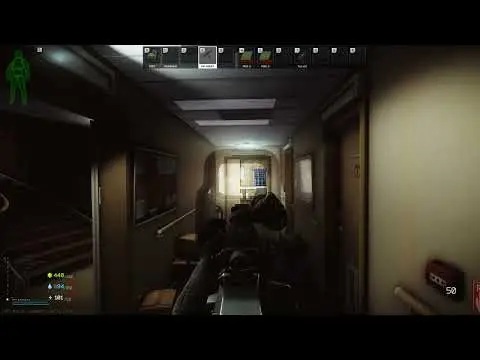

Mod
Manimal's CS Gas
- Downloads
- 2,032
- Favourites
- 29
- Mod lists
- 26
This mod displayed a profile-binding notice on Forge.
The Mod
This mod adds a custom Grenade type: The Model 8230 CS gas grenade. It works similar to 1.0 with volumetric gas propagation, and the effects can be mitigated using a gas mask or respirator.
They can also be used as tripwires.

Installation
Drag it into the folder baby.

Where to find me
- Here (WTT Discord Channel)
- And here (My EVIL Discord Server….)
If you like my work and wish to support me, you can do so here.